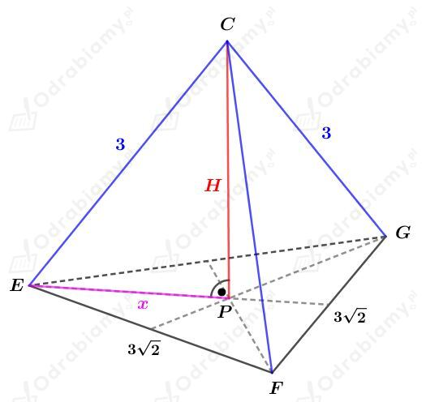

Rysunek:
Zauwa偶my, 偶e boki szeciokta P1P2P3P4P5P6 s przeciwprostoktnymi tr贸jkt贸w prostoktnych o przyprostoktnych dugoci 1/2a. Zatem
Czyli szeciokt P1P2P3P4P5P6jest szecioktem foremnym.
Wyznaczmy dugo boku tego szeciokta. Korzystajc ze wzoru na dugo przektnej kwadratu mamy:
Szeciokt foremny zbudowany jest z szeciu przystajcych tr贸jkt贸w r贸wnobocznych.
Wyznaczmy pole tego szeciokta. Korzystajc ze wzoru na pole tr贸jkta r贸wnobocznego mamy:
Rysunek:
a)
Wiemy, 偶e
zatem
Obliczmy pole otrzymanego przekroju. Mamy:
b)
Wiemy, 偶e
Tr贸jkt SCE jest tr贸jktem r贸wnoramiennym prostoktnym, zatem:
oraz
Obliczmy pole otrzymanego przekroju. Mamy:
Rysunek:
Punkty P i Q s rodkami - odpowiednio - krawdzi AB i AD.
Korzystajc ze wzoru na przektn kwadratu wiemy, 偶e
Odcinek RC stanowi 3/4 dugoci tej przektnej, czyli
Korzystajc z twierdzenia Pitagorasa dla tr贸jkta RCC1 mamy:
Wyznaczmy cosinus kta. Mamy:
Niech h bdzie dugoci wysokoci trapezu QPEF. Korzystajc z wyznaczonego cosinusa mamy:
Wyznaczmy pole trapezu QPEF. Mamy:
Wyznaczmy pole tr贸jktaFEC1. Mamy:
Wyznaczmy pole otrzymanego przekroju. Mamy:
Rysunek:
Podstaw tego graniastosupa jest kwadrat o polu 32 cm2, zatem
Korzystajc z twierdzenia cosinus贸w dla tr贸jkta ACH mamy:
Korzystajc ztwierdzeniaPitagorasa dla tr贸jkta ADH mamy:
Wyznaczmy objto tego graniastosupa. Mamy:
Rysunek:
Powstay przekr贸j DBFE jest trapezem r贸wnoramiennym.
Zauwa偶my, 偶e
i
Zauwa偶my, 偶e tr贸jkt SPG jest tr贸jktem prostoktnym r贸wnoramiennym, czyli
Zatem
Obliczmy objto tego graniastosupa. Mamy:
Obliczmy pole trapezu DBFE. Korzystajc ze wzoru na pole trapezu mamy:
Rysunek:
Korzystajc z twierdzenia Pitagorasa dla tr贸jkta ACD otrzymujemy:
Wiedzc, 偶e pole tr贸jkta ACH jest r贸wne 25 cm2, otrzymujemy:
Rozwa偶my tr贸jkt prostoktny ACD. Korzystajc z podanego wzoru
| Dugo wysokoci h opuszczonej na przeciwprostoktn c w tr贸jkcie prostoktnym opisuje wz贸r |
mamy:
Korzystajc z twierdzenia Pitagorasa dla tr贸jkta DPH mamy:
Wyznaczmy objto tego prostopadocianu. Mamy:
Szecian o krawdzi 6 cm przecito paszczyzn przechodzc przez rodki krawdzi wychodzcych z wierzchoka C.
Zauwa偶my, 偶e mniejsza otrzymana w wyniku cicia brya, jest ostrosupem prawidowym tr贸jktnym.
Dugo krawdzi jej podstawy stanowi 1/2 dugoci przektnej kwadratu o boku dugoci 6 cm, czyli
Dugoci krawdzi bocznych tego ostrosupa stanowi 1/2 dugoci krawdzi szecianu, czyli maj dugo 3 cm.
Odcinek PC jest wysokoci tego ostrosupa.
Rysunek pomocniczy:

Odcinek x stanowi 2/3 dugoci wysokoci tr贸jkta r贸wnobocznego EFG. Korzystajc ze wzoru na dugo wysokoci tr贸jkta r贸wnobocznego mamy:
Korzystajc z twierdzenia Pitagorasa dla tr贸jkta EPC mamy:
Wic otrzymalimy